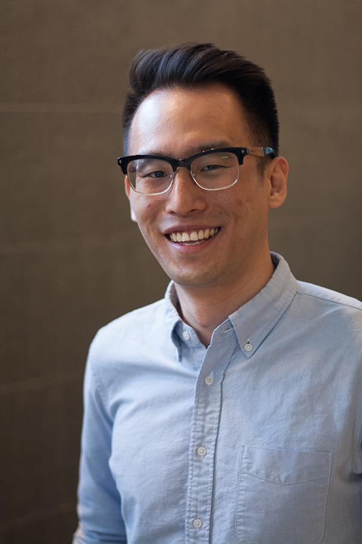

Hi there, I'm James.

I'm a PhD graduate from the Department of Medical Biophysics at the University of Toronto. I studied cancer predisposition in Li-Fraumeni syndrome alongside a talented cross-disciplinary team at the Malkin lab in the SickKids Research Institute.
As a trained cell biologist, I used CRISPR technology to understand how mutations in the TP53 gene can initiate cancer development, and explored the effects of restoring normal p53 function in primary human cells and mouse cancer models.
Today, I am a scientific investment banking analyst at Bloom Burton & Co., Canada's leading healthcare-specialized investment bank. On the science team, I learn about healthcare technologies through technical due diligence and market research, and help management teams move towards their next milestone.
Previously, I was a product manager at BenchSci, an ML-powered reagent selection platform for R&D scientists, where I worked on improving the search experience.